An illustration of the various types of solutions plots that might be presented for the solution to an ODE.
| > | with(DEtools): |
| > |
Example: Mixture Problems
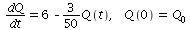
| > | deq:=D(Q)(t)=6-3*Q(t)/50; |
| 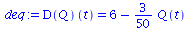 | (1.1) |
The ODE defines a direction field at each point in the t-Q plane, which can be plotted using 'dfieldplot'.
| > | dfieldplot( deq, Q(t), t=-20..50, Q=-100..200 ); |
| 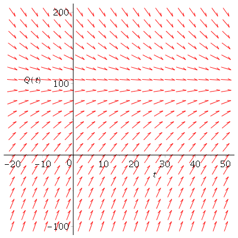 |
The general solution can be viewed as a family of integral curves, which can be plotted using 'DEplot'.
| > | DEplot( deq, Q(t), t=0..100, [[Q(0)=200], [Q(0)=100], [Q(0)=0]], Q=-5..300, arrows=NONE ); |
| 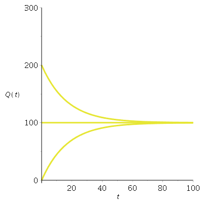 |
Here is how to solve an ODE for the general solution, and an IVP (with initial condition) for a particular solution.
| > | dsolve( deq, Q(t) ); |
| 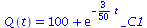 |
| > | dsolve( [deq, Q(0)=0], Q(t) ); |
| 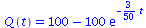 |
You can use 'plot' (or 'DEplot') to plot the particular solution.
| > | plot( rhs(%), t=0..200, 0..500 ); |
| 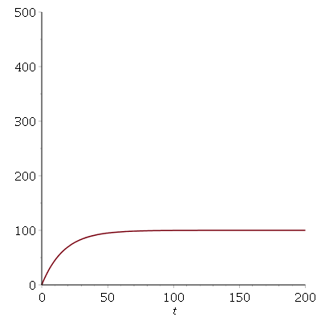 |
| > |
Example: Population growth
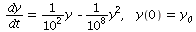
| > | deq:=D(y)(t)=(1/100)*y(t) -(1/10^8)*y(t)^2; |
| 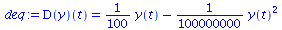 | (2.1) |
The ODE defines a direction field at each point in the t-y plane, which can be plotted using 'dfieldplot'.
| > | dfieldplot( deq, y(t), t=0..500, y=-10^6..2*10^6 ); |
| 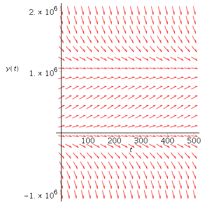 |
The general solution can be viewed as a family of integral curves, which can be plotted using 'DEplot'.
| > | DEplot( deq, y(t), t=0..1000, [[y(0)=10^3],[y(0)=10^5], [y(0)=10^6], [y(0)=2*10^6]], y=0..2*10^6, arrows=NONE ); |
|
Here is how to solve an ODE for the general solution, and an IVP (with initial condition) for a particular solution.
| > | dsolve( deq, y(t) ); |
| 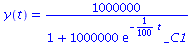 |
| > | dsolve( [deq, y(0)=10^4], y(t) ); |
| 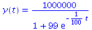 |
You can use 'plot' (or 'DEplot') to plot the particular solution.
| > | plot( rhs(%), t=0..2000, 0..10^6 ); |
| 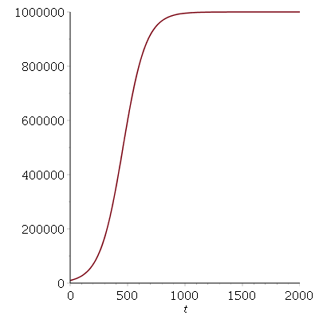 |
| > |